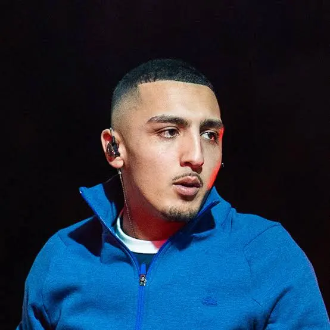

Morad

Morad El Khattouti El Horami (Arabic: مراد الخطوطي, romanized: Murād āl-Kẖṭūṭī; born 5 March 1999),[1] known mononymously as Morad, is a Moroccan-Spanish[2] rapper and singer. He released his debut studio album, M.D.L.R, in 2019. Morad topped the PROMUSICAE singles charts with the singles "Bzrp Music Sessions Vol. 47" in 2021, "Pelele" in 2022, and "Manos rotas" in 2023.
Morad was born on 5 March 1999 in the La Florida neighbourhood of L'Hospitalet de Llobregat, Barcelona, to Moroccan parents. His mother is from Larache and his father was from Nador;[3] the latter abandoned the family when Morad was young.[4] He spent some of his childhood in a children's home.[5] He began rapping with friends at the age of 14 via WhatsApp.